En esta práctica trabajaremos con la herramienta DRBL e instalaremos imégenes ISO a equipos clientes mediante el método multicast.
El objetivo de esta memoria es aprender a crear utilizar la herramienta DRBL utilizandola para enviar la imágen ISO a varias máquinas cliente utilizando el método multicast.
1Parte I: Crear una imagen a través de DRBL (Clase)
Creo el segundo disco en VirtualBox. Y luego lo monto mediante la terminal.
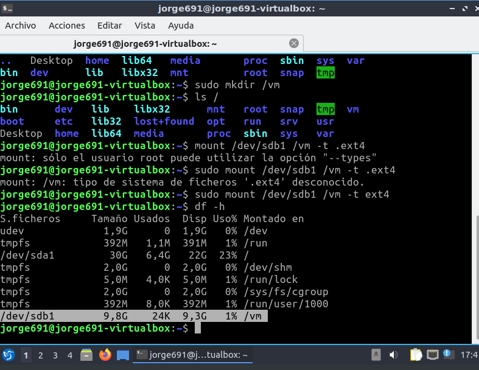
Una vez montado el segundo disco. Hago un reboot pero con la iso de DRBL
Entro en clonezilla lives. Selecciono la opción de guardar la imagen en un disco.

Después, indico donde se encuentra la imagen que quiero clonar.

Indico que quiero que copie la imagen en el segundo disco, en el sdb1

Aquí indico qué directorio quiero que esté. Por error pulsé en lost+found

Aquí introduzco el nombre de la imegen que queiro grabar

Omito la comrpobación para agilizar el proceso.


Como indiqué que lo guardará en lost+found ahí estaba. Después moví la imágen a la carpeta que creé.

2Parte II: Clonar la imagen en al menos un equipo a través de la red interna
Vuelvo a arrancar la MV con DBRL. Pero ahora entro a clonezilla server.
Elijo el modo de configuración de la red.

Introduzco la mascara de red

Introduzco la Gateway por defecto
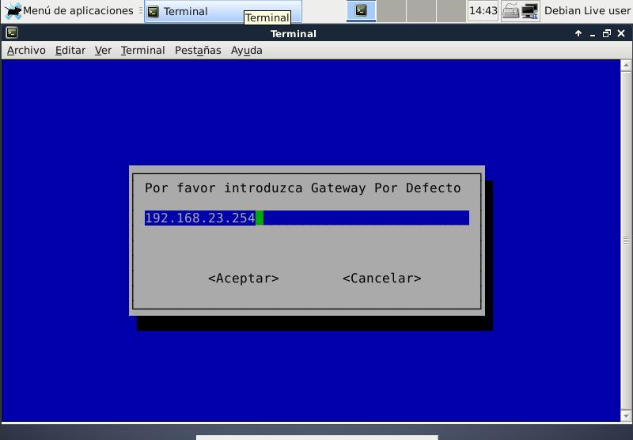
Selecciono el disco donde quiero que lean la imágen previamente copiada.
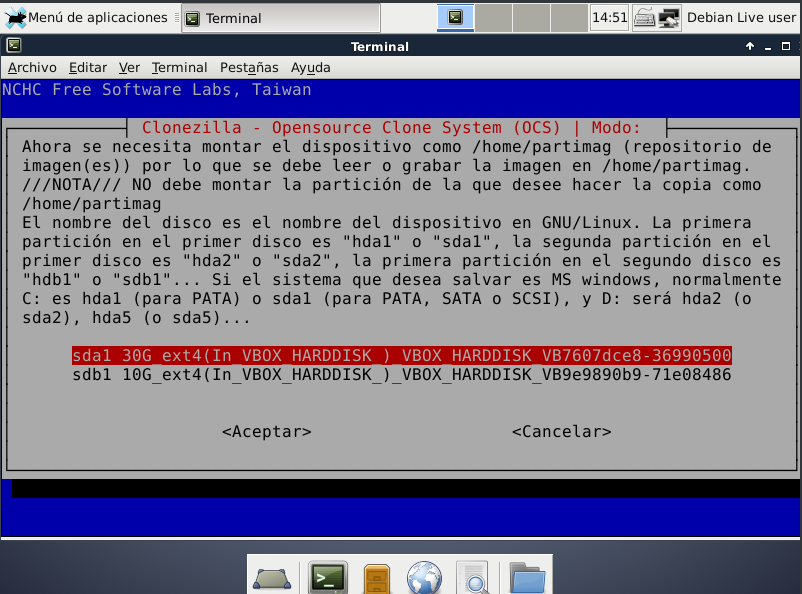
Selecciono quienes quiero que reciban la copia de la imágen.
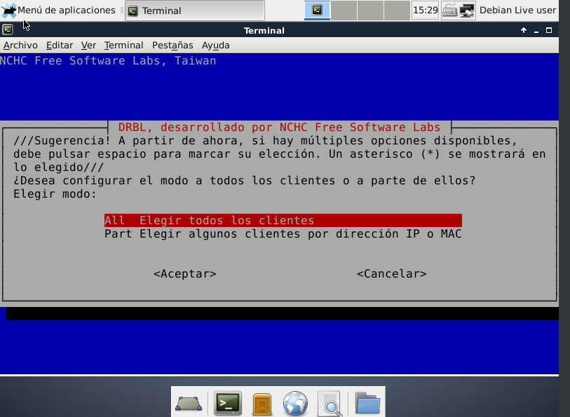
Indico que quiero que la imágen se descargue directamente a los discos de las máuinas objetivo.
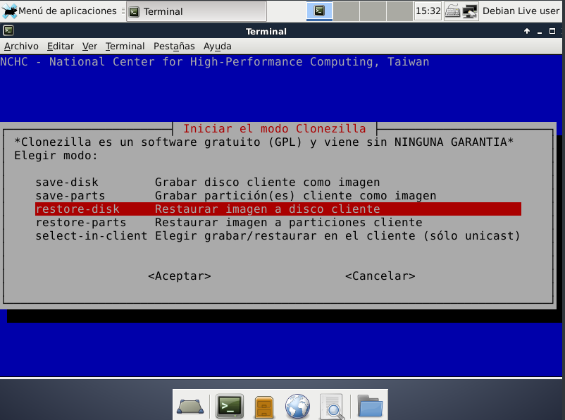
Selecciono la imágen que copie en la primera parte.
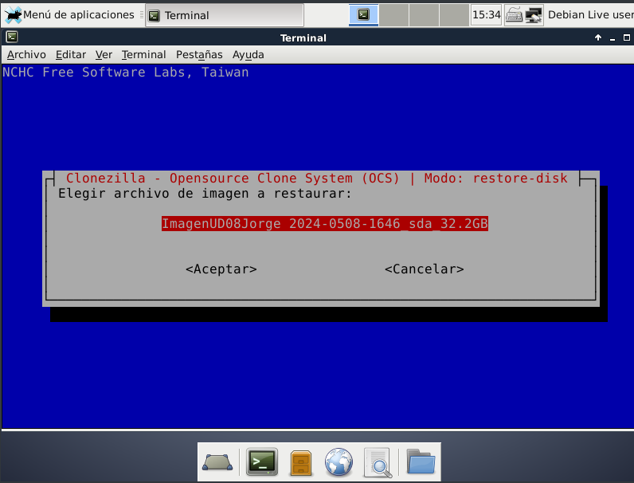
Selecciono el modo multicast.
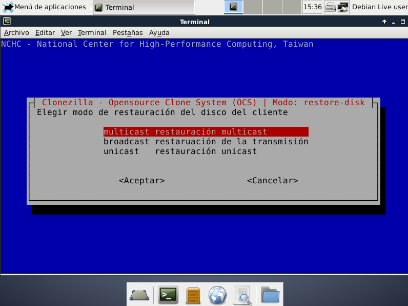
Selecciono el método para la clonación multicast
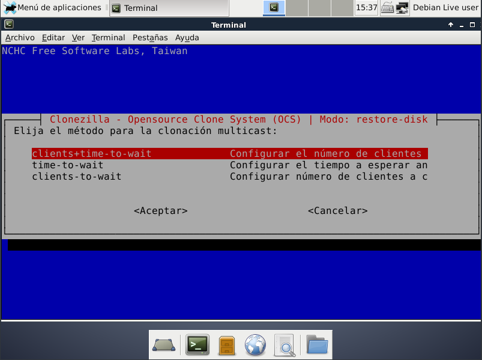
Una vez llegado a este punto, mantengo abierta esta ventana para que los servicios de clonezilla continuen operativos mientras las máquinas clientes descargan la imágen.
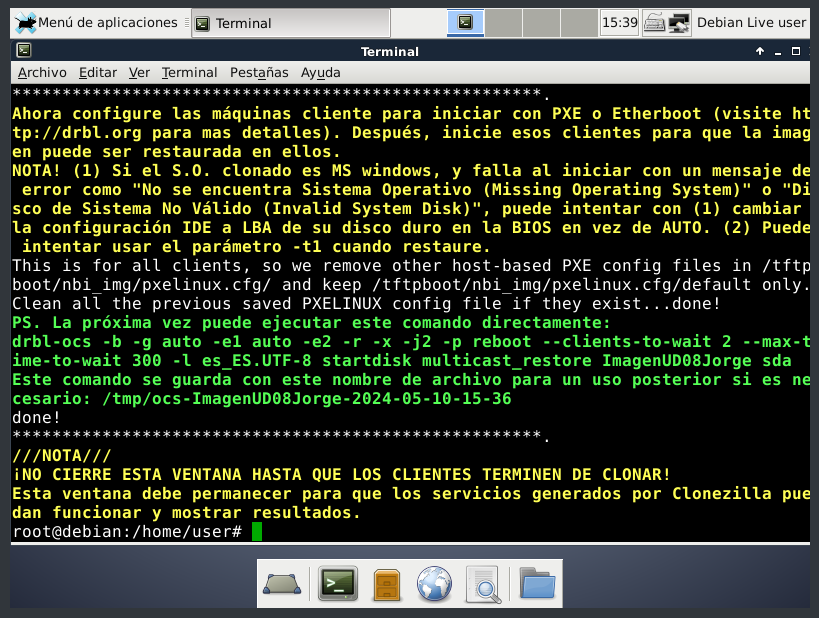
Enciendo las máquinas cliente y me da problemas en el proceso porque no les había dado suficiente memoria.
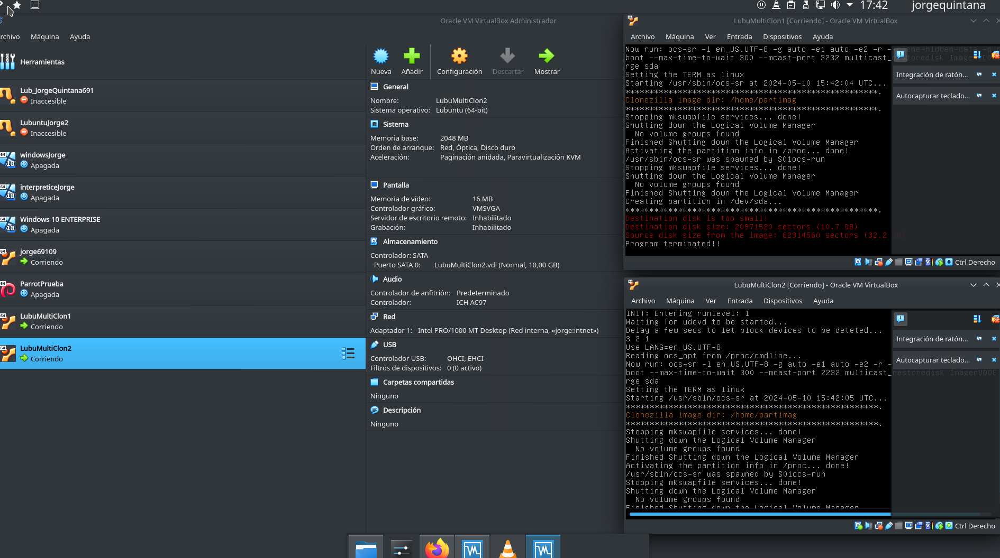
Les doy más memoria y renuevo el proceso.
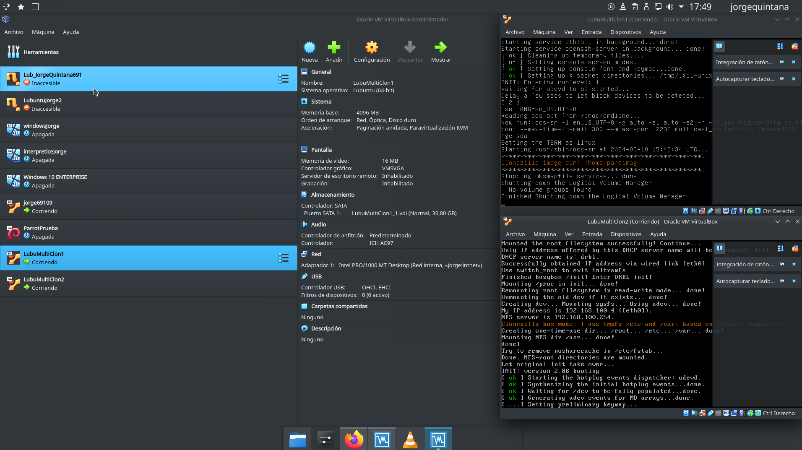
Una de las máquinas me falla pero la segunda continua el proceso. Probablemente exigí demasiado a mi ordenador de clase.
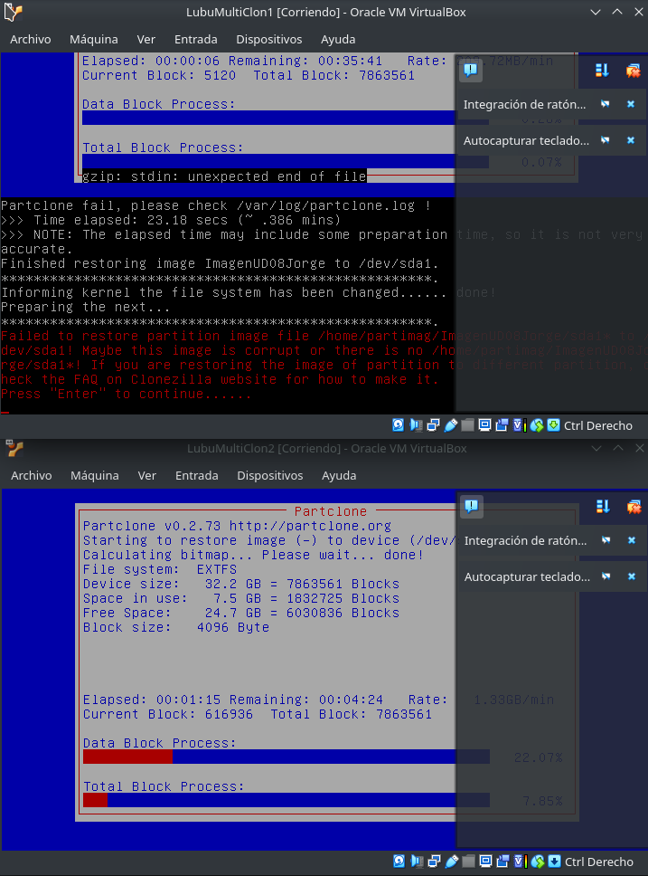
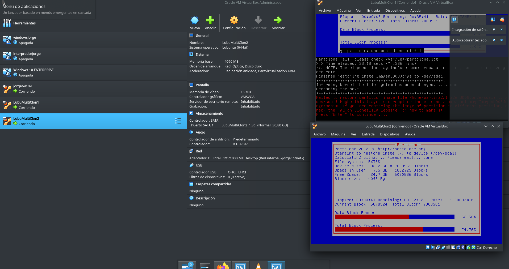
Cometí dos errores a lo largo de la práctica. El primero fue seleccionar lost found como destino de la imágen copiada en la primera parte, pero lo solucioné al mover la imágen. El segundo fue cuando no dí suficiente espacio a las máquinas cliente para poder completar el proceso de multicast. Sin embargo, no conseguí instalar la imágen en los equipos clientes debido a que no complete el proceso final de instalación de la imágen mediante multicast.
Me ha gustado la práctica, pero es una lástima que no la llegué a terminar. Comprendo que este metodo de copiar imágenes ISO a otros equipos es muy útil, porque te permite instalar SOs de muchos equipos mucho más rápida que hacerlo 1 en uno.